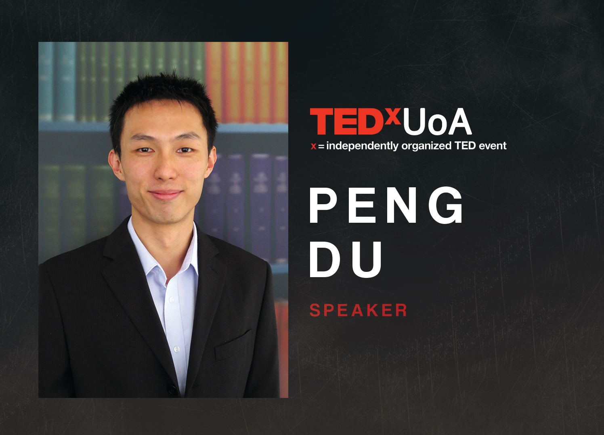
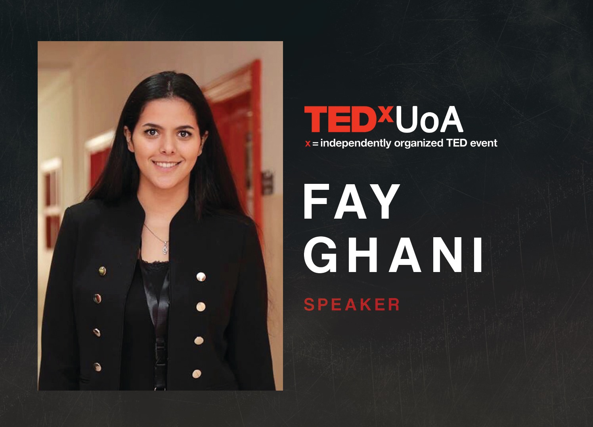
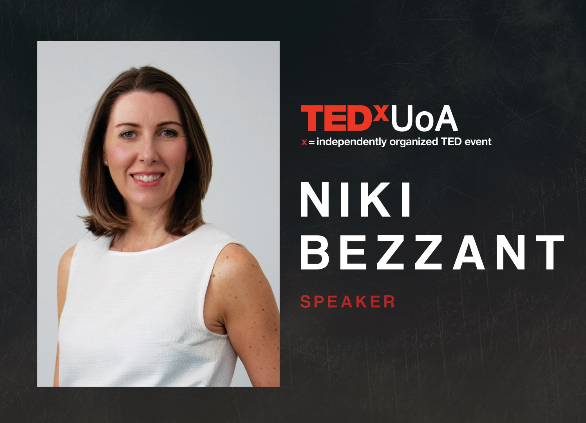
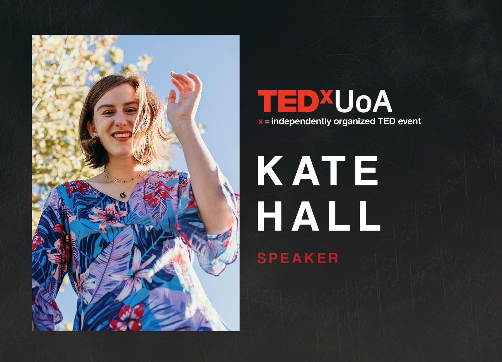

Our spectacular speaker line-up has been released, and we're so excited to hear from them in 2019's conference! Get to know them below:
Dr. Peng Du
Dr Peng Du is a Senior Research Fellow in the Gastrointestinal Research Group at the University of Auckland Bioengineering Institute. He is heavily involved with mathematical modelling in gastrointestinal electrophysiology, where he has developed cutting-edge technology to improve clinical research and diagnosis of any abnormal activity within the gut by monitoring bio-electric signals. Peng has received numerous awards, including the 2018 Prime Minister's MacDiarmid Emerging Scientist winner (a prestigious award dedicated to rising New Zealand scientists involved in leading-edge research)!
Fay Ghani
Fay is currently a student at The University of Auckland but has had her fair share of travel from living in Auckland, Malaysia and Jordan. From a young age, her parents placed an emphasis on travelling the world and appreciating the beauty that other cultures and people bring. With her multicultural upbringing and experiences and stories of those around her, she's extremely inspired to share her understanding of transformations in identity as a consequence of our shared world.
Niki Bezzant
Niki is an esteemed writer and speaker for the food industry, advocating for sustainable food consumption and sensible use of media to create a positive and constructive space for nutrition. Currently the President of Food writers NZ, she has followed numerous ventures in food and journalism through founding both the Cuisine and the Healthy Food Guide magazine, becoming an ambassador to the Garden to Table programme, and being a member of the council of Directors for the True Health Initiative. Through these, she's certainly knowledgeable and is passionate in sharing the effects of modern media and consumer attitudes on improving lifestyle and health.
Kate Hall
Get to know our speaker who'll be touching on current Environmental insights: Kate Hall! Between being a social media influencer and a sustainable living advocator, Kate is a passionate and determined entrepreneur, writer, and founder of two brands. Better known as Ethically Kate, she creates a space that teaches people how to live more sustainably, highlighting the ease of transitioning into a sustainable lifestyle, along with encouraging brands to be proud of their products and champions them to maximum confidence. Her other brand, Coast Sitters, is a babysitting/nannying service of over 20 employees centered in Hibiscus Coast where parents can safely leave their children when in need of extra help. Kate will share key points and insights through her journey of innovation and sustainability.
Wendy Kerr
Wendy Kerr is a board member for The Icehouse, which mentors high potential start-ups, and is also the Director of the Centre for Innovation and Entrepreneurship at The University of Auckland, where she aims to grow business savvy, entrepreneurially minded students. In her venture she has transformed the Centre, increasing programme participation by 272% since 2015, including the recently launched incubator and the iconic innovation hub, Unleash Space, which was opened by the Prime Minister. As an experienced General Manager, she has global experience in leading technology and media start-ups with the Financial Times, Pearson, and Quicken, where she had a record-breaking tech IPO on the ASX. Wendy is also an international speaker and best-selling author, having written two books on female-led startups.
Dr Samuel Ekundayo
Dr Samuel Ekundayo is an Author, Senior Lecturer, Life-Coach and Motivational Speaker. Often referred to as ‘The Purpose Preacher’, his mandate is to help individuals and organisations discover their purpose so they can maximise their potentials towards a meaningful, impactful and influential life. He is an internationally sought-after speaker and has been privileged to inspire thousands of people at various corporate organisations, independently organised conferences and churches in and out of New Zealand. Through his writing, videos and published books, Samuel relentlessly challenges the modern-day definition of success through a collection of personal experiences, godly insights, and unrivaled inspiration. He is also the founder of Motivitality, a weekly motivational video series on YouTube and Facebook with the vision of helping men and women live with purpose and maximise their potentials